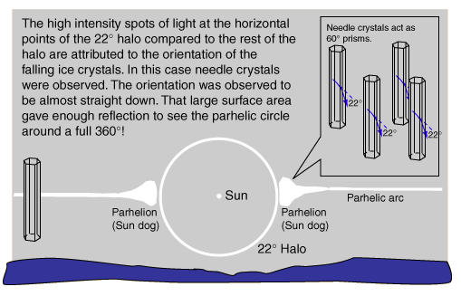
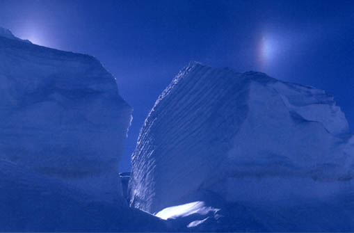
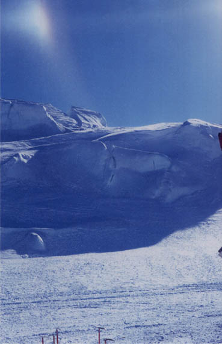
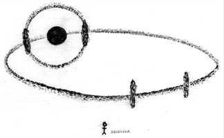

Sundogs in Antarctica
The parhelia or "sun dogs" are more readily visible in the cold of the antarctic and artic regions.


Photos by Dr. Richard Sadleir. Used by permission. All rights reserved.
|  |
In the photo of the large split ice cliff above, the sun is to the left behind the cliff, which allowed this striking image of the right sun dog to be photographed. The left sun dog was photographed by hiding the sun behind the building to the right of the lower photo.
The photographs were made by Dr. Sadleir on Ross Island, Antarctica in November of 1987 when he was there for a snow survival course. In the course of his employment with the Department of Conservation of the New Zealand government, this opportunity came as a part of a study of the Adelie penquins.
He describes the preconditions as follows: "It was a brilliant sunny day but there was a high upper wind off Mount Erebus, filling the air with falling ice crystals."
|
One of the remarkable things about Dr. Sadleir's experience was the observation of a parhelic circle which made a full 360° around the sky. "Over a period of 3/4 of an hour a complete ... 360° parhelic curcle developed at the same time as the usual sun halo [the 22° halo]. At the intersection of the two rings there were brilliant sun dogs with rainbow colouration. On the opposite side of the parhelic circle developed mirror sun dogs which were not rainbow coloured but just white light." |

Hut Point Peninsular, Ross Island, Antarctica, November 19, 1987.
|
"I also noticed something I had not seen in previous sun haloes, perhaps because this was in perfect conditions. The light ring of the halo was very intense on the sun side of the halo and then faded outwards. "
"After the whole phenomena faded, the cloud of ice crystals actually fell around us for a short time. They were elongated crystals about 8 to 12 mm long. I remember them as falling vertically (the air was absolutely still)."
The coloration of the sundogs arises from dispersion in the ice crystals, which act as 60° prisms to separate the colors of sunlight. The prism calculation using n=1.306 for red and n=1.317 for blue gives angles of 21.54° and 22.37° for red and blue respectively. The inner edge of the halo is sharp and appears reddened - the angle of minimum deviation for red is less and you see it from crystals closer to the Sun or Moon direction. The out edge of the halo is blue in appearance but less saturated because other wavelengths can refract at that angle.
|
Index
Halo formation
Atmospheric optics concepts
References
Greenler
Schaaf |